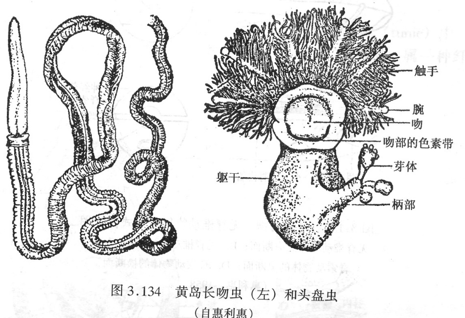

无脊椎与脊索的桥梁 / 重要的过渡类型
一、半索动物概述
半索动物门（Hemichordata）是一类全部海产、底栖的小门动物（约 100 余种），分类地位特殊——既有后口特征（与脊索动物近缘），又有无脊椎特征。代表：柱头虫（acorn worm，Balanoglossus）、头盘虫（Cephalodiscus）。
- 分类争议：①曾被归入脊索动物门（认为"口索"是雏形脊索）；②现多独立成门，但被认为与脊索动物同源；③与棘皮动物分子亲缘关系近（18S rDNA 证据）。
- 生活方式：柱头虫穴居海底泥沙中，挖掘 U 形穴道，吞食底泥中的有机碎屑（碎屑食性）。
- 分布：从潮间带到深海；我国黄海、东海、南海均有分布。
二、柱头虫的形态与解剖
1. 体部分三段（这是半索动物的标志性特征）：
- 吻（proboscis）—— 前端圆锥状，吻腔（体腔）充满水时坚挺有力，是挖掘和穴居的主要工具，故名"柱头"虫。
- 领（collar）—— 短而环状，包裹吻的基部。
- 躯干（trunk）—— 最长一段，具鳃裂、肠、生殖腺。分前部（具鳃裂与生殖腺）、后部（肝盲囊、肝区）。
2. 消化系统：口（位于吻、领之间腹面）→ 咽（具鳃裂，咽侧成对排列）→ 食道 → 肠（具肝盲囊）→ 肛门（位于躯干末端）。
3. 呼吸与鳃裂：咽部具成对鳃裂（pharyngeal gill slits），与外界及肠相通，是脊索动物共有特征。柱头虫鳃裂 7–700 对不等。
4. 循环系统：开管式循环。血流方向与脊索动物相反——心脏在腹侧（背血管在背侧，血液由后向前流）。这与脊索动物"心脏在腹侧，血液由前向后流"形成有趣对照。
5. 神经系统：背、腹两条神经索（背神经索伸入领部有局部空腔，无真正的中空背神经管，是雏形而非真结构）。无神经节分化。
6. 口索（stomochord）：位于吻腔背侧、咽部前方的一短盲管，外胚层起源，由内柱细胞构成，是脊椎动物脑垂体前叶（腺垂体）的前身。这一同源关系是研究脊椎动物内分泌演化的关键证据。
7. 生殖：雌雄异体，多对生殖腺（位于躯干前部背侧），体外受精，间接发育：
- 受精卵 → 柱头幼虫（tornaria）—— 与棘皮动物的羽腕幼虫（bipinnaria）极为相似（间接发育标志）
- → 短腕幼虫
- → 沉入海底变态为成虫

三、半索动物在动物界的位置
半索动物的分类地位是长期争议问题，存在两种观点：
观点 1：半索动物是脊索动物最原始的类群（传统观点）
- 支持证据：①具咽鳃裂（与文昌鱼同源）；②具雏形背神经索；③具口索（与脑垂体同源）。
- 反对意见：①口索不是真正脊索；②无真正中空背神经管；③心脏位置与脊索相反；④背神经索位置在消化管背侧（文昌鱼同样），但循环方向相反。
观点 2：半索动物是无脊椎动物中的独立一个门（现代观点）
- 支持证据：①与棘皮动物分子亲缘关系最近（18S rDNA、Hox 基因、钙质骨片基因）；②棘皮幼体（羽腕幼虫 bipinnaria）与柱头幼虫（tornaria）形态高度相似；③棘皮与半索均具"口索-脑垂体前叶"同源结构。
目前主流观点：半索动物是无脊椎动物中独立的一个门，与脊索动物同属后口动物，共同起源于一类"原始后口动物"。棘皮、半索、脊索三者构成"后口动物演化支"（Deuterostomia）。
脊索 / 背神经管 / 咽鳃裂 / 肛后尾 / 腹心
四、脊索动物门（Chordata）核心特征
脊索动物门是动物界最高等的类群，包括尾索、头索、脊椎三大亚门，约 5 万种以上，代表性动物：海鞘 → 文昌鱼 → 鱼 → 两栖 → 爬行 → 鸟 → 哺乳（含人类）。
三大主要特征（必须终身或胚胎期出现）：
- 脊索（notochord）：位于消化管背侧、神经管腹侧的一条中空棒状结构，由富含液泡的脊索细胞和纤维鞘构成。起源于中胚层。具纵向弹性、抗压抗弯，是原始的中轴骨骼。胚胎期所有脊索动物都有；脊椎动物成体被脊椎（vertebral column）替代，仅残余为髓核（nucleus pulposus）（椎间盘的胶状核心，即疝出的"椎间盘突出"部位）。
- 背神经管（dorsal hollow nerve cord）：由外胚层内陷卷褶形成的中空管，位于脊索背侧。起源于外胚层。前端膨大形成脑，后端形成脊髓。是中枢神经系统的原基。半索动物的"背神经索"虽有雏形空腔，但不是真正由外胚层卷褶形成的中空管。
- 咽鳃裂（pharyngeal gill slits）：咽部成对裂开、连接咽腔与外界的裂孔。起源于外胚层。低等水生脊索动物终身保留（鱼、蝌蚪），陆生种类仅胚胎期出现（如鸡胚、人胚有鳃沟但不成裂）。
次要特征（多数脊索动物共有）：
- 肛后尾（post-anal tail）—— 肛门后方延伸的尾部，含尾肌、尾鳍，是脊索动物演化的"动力推进器"。
- 内柱（endostyle）—— 咽底壁的一沟状结构，能分泌黏液捕食微粒，与脊椎动物甲状腺同源（含碘、合成甲状腺素前体）。
- 心脏在腹侧—— 与半索动物相反；闭管式循环（与无脊椎的开管式循环区别）。
- 闭管式循环—— 血液始终在血管内流动（环节动物、部分头索也是闭管式）。
- 中胚层形成的脊索（区别于外胚层口索）。
五、原索动物 vs 脊椎动物
脊索动物门分 3 个亚门：尾索、头索、脊椎。前两者无真正的脊椎，统称"原索动物"（protochordate）。
| 特征 | 尾索动物亚门 Urochordata | 头索动物亚门 Cephalochordata | 脊椎动物亚门 Vertebrata |
|---|---|---|---|
| 代表动物 | 海鞘（Ascidian）、海樽、纽鳃樽 | 文昌鱼（Branchiostoma / Amphioxus） | 鱼→两栖→爬行→鸟→哺乳 |
| 脊索 | 仅幼体（尾部）有，成体消失 | 终生保留（从前到后贯穿全身） | 仅胚胎期有，成体被脊椎替代（残余为髓核） |
| 背神经管 | 幼体有，成体退化为神经节 | 终生保留（前端略膨大成"脑泡"） | 前部膨大为脑，后部为脊髓，终生保留 |
| 咽鳃裂 | 终生保留（数量多） | 终生保留（约 60+ 对） | 水生种类终生保留，陆生仅胚胎期 |
| 生活方式 | 成体固着，被囊包被（逆行变态） | 半穴居、滤食 | 自由生活为主 |
| 主要特征 | 变态后脊索消失 → 最简单的脊索动物 | 保留所有三大特征 → 脊索动物的"活模式标本" | 脊椎+脑+复杂感官 |
| 代表意义 | 脊索动物与无脊椎动物的关系线索 | 脊椎动物的直接祖先原型 | 演化最复杂最高等 |
海鞘的"逆行变态"（retrogressive metamorphosis）—— 幼体（蝌蚪形）有脊索、背神经管、咽鳃裂，可在水中自由游泳；变态后固着生活，脊索消失、背神经管退化为单神经节、被囊（tunic，被囊纤维素 tunicin 包被）形成。海鞘是研究脊索动物起源与发育演化的关键材料。
文昌鱼的关键地位：
- 终生保留脊索 → 是研究脊索动物原始特征的"活化石"。
- 具有脊椎动物的若干雏形：背神经管前端略膨大为"脑泡"（无真正的脑分化）；肾管分节排列（与原肾、后肾演化）；闭管式循环；内柱。
- 滤食方式：水流从口入咽，经鳃裂出鳃腔，食物被内柱分泌的黏液捕获。
- 分布：中国厦门（"文昌鱼是厦门的名片"）、青岛、烟台。
连续性与演化 / 体节 / 体腔 / 骨骼 / 呼吸 / 排泄
六、无脊椎→脊椎的连续性与演化
无脊椎动物到脊椎动物的演化不是断裂的，而是一连串的渐进创新累积的过程。从本课程所学的 12 个门来看，演化连续性体现在以下 6 个方面：
七、体节与分节的演化
1. 不分节：扁形、线形、软体、棘皮（成体分节特征退化）—— 身体不按相同单位重复。
2. 同律分节（homonomous metamerism）：环节动物（蚯蚓）—— 每节形态功能基本相同，是分节演化的原始状态。
3. 异律分节（heteronomous metamerism）：节肢动物 —— 身体分为头、胸、腹等不同功能区，各区附肢和结构特化。
4. 头部分化：环节→节肢 出现头部（感觉中心）；脊索动物头部更复杂，形成脑。
5. 脊椎动物分节：脊椎、肋骨、肌肉、神经、血管均为分节排列——这是环节分节的"遗存"。
演化意义：分节 → 异律分节 → 头部形成 → 神经系统集中 → 复杂行为的物质基础。
八、体腔演化的连续性
1. 无体腔（扁形）—— 中胚层形成实质组织。
2. 假体腔（线形、轮虫）—— 中胚层与内胚层之间空腔，起源于胚胎囊胚腔残余；只有体壁中胚层，无脏壁中胚层。
3. 真体腔（软体、环节、节肢部分、棘皮、脊索）—— 中胚层裂开（原口）或原肠外突（后口）形成；体壁中胚层 + 脏壁中胚层，可形成独立管道（消化壁外层、循环管道、排泄管道、生殖管道）。
4. 混合体腔（节肢）—— 真体腔退化，被血淋巴填充的开放腔（血体腔）取代，开放式循环配套；生殖腔保留部分真体腔性质。
5. 体腔的重新复杂化（脊索）—— 真体腔分为围心腔（pericardial cavity）、胸膜腔（pleural cavity）、腹膜腔（peritoneal cavity）等，配合肺、心等复杂器官的演化。
九、骨骼的演化
1. 无骨骼：扁形、线形 —— 靠体壁肌肉和体液静压支撑。
2. 外骨骼（exoskeleton）：节肢动物 —— 几丁质 + 蛋白质 + 碳酸钙，由表皮细胞分泌；随身体生长需蜕皮（ecdysis）。
3. 内骨骼（endoskeleton）：棘皮动物（中胚层起源的钙质骨片）、脊索动物（脊索 + 脊椎，由中胚层形成）—— 不需蜕皮，可终生生长。
4. 混合骨骼：脊椎动物既有内骨骼（脊椎、四肢骨），也有外骨骼的衍生物（皮骨/鱼鳞、龟甲、毛、羽、爪、指甲、犀牛角）—— 但均为中胚层起源，区别于节肢外骨骼的外胚层起源。
5. 骨骼的功能：①支撑体轴；②保护内脏；③肌肉附着点（杠杆）；④储存矿物质（钙、磷）；⑤产生血细胞（红骨髓）。
十、呼吸系统的演化
1. 体表扩散（diffusion through body surface）：海绵、腔肠、扁形等小型动物 —— 没有专门呼吸器官，靠体表直接与水/空气交换气体。
2. 鳃（gill）：环节（多毛类疣足）、软体（瓣鳃、头足）、节肢（甲壳类、肢口类） —— 体壁外突形成，富含毛细血管，增大气体交换面积。
3. 书鳃（book gill）：肢口纲（鲎） —— 鳃折叠如书页状，外胚层起源，每片鳃如书页，气体交换效率高。
4. 书肺（book lung）：蛛形纲 —— 体壁内陷形成，外胚层起源，结构与书鳃同源，是节肢动物"登陆"的关键适应。
5. 气管系统（tracheal system）：多数昆虫、其他陆生六足类 —— 体壁内陷形成分支管，不依赖血液运输氧气，由气门（spiracle）通外界；微气管直接送达组织细胞。
6. 肺（lung）：脊椎动物（鱼→两栖→爬行→鸟→哺乳） —— 消化管前端的咽囊（鳃囊同源）演化为肺，内胚层起源，富含毛细血管。
十一、排泄系统的演化
1. 原肾管（protonephridium）：扁形、纽形 —— 由焰细胞（flame cell）组成，外胚层起源，主要调节水分和离子平衡，排泄物为氨。
2. 后肾管（metanephridium）：环节、软体 —— 一端开口于体腔（肾口 nephrostome），另一端开口于体外（肾孔），中胚层起源，可回收体腔液中有用物质。
3. 马氏管（Malpighian tubule）：节肢（昆虫、蛛形、多足） —— 中后肠交界处伸出细管，外胚层起源，从血淋巴中吸收尿酸排入后肠；直肠重吸收水分和无机盐。尿酸不溶于水，是陆生节肢动物保水适应的关键。
4. 基节腺（coxal gland）：蛛形、甲壳 —— 位于足基部，中胚层起源，排泄物为氨或尿素。
5. 绿腺 / 触角腺：甲壳类 —— 位于第二触角基部，外胚层起源，排泄物为氨。
6. 脊椎动物肾脏：脊椎动物 —— 由前肾 → 中肾 → 后肾演化（鱼类中肾，羊膜动物后肾），中胚层起源，含数百万肾单位，排泄物尿素（哺乳）或尿酸（鸟爬）。
2022–2026 联赛真题 / 知识总结
十二、联赛真题精选（半索、脊索与无脊椎总论）
真题 1（2002 全国 4）：高等无脊椎动物与脊索动物的共同特征为：
A. 具头索、后口、真体腔 B. 后口、三胚层、真体腔 C. 有鳃裂、肛后尾、神经管 D. 有神经管、三胚层、两侧对称
【答案】B 解析：后口+三胚层+真体腔 是棘皮与脊索共有。
真题 2（2002 全国 13）：以下哪些特征是棘皮动物与其它无脊椎动物都不同：
A. 次生辐射对称 B. 体腔形成的水管系统 C. 骨骼均由中胚层发生 D. 胚孔成为成体的口
【答案】ABC 解析：D 错——棘皮原口→肛门。
真题 3（2018 江苏 86）：2017 年诺贝尔医学或生理学奖获得者用以下哪种模式生物，分离出一个控制生物节律的基因：
A. 果蝇 B. 小鼠 C. 线虫 D. 斑马鱼
【答案】A 解析：诺奖关于生物节律（period 基因）的研究对象是果蝇。
真题 4：下列关于半索动物的叙述，错误的是：
A. 全部海产 B. 具咽鳃裂 C. 口索是真正的脊索 D. 与棘皮动物亲缘关系较近
【答案】C 解析：口索不是真正的脊索，是外胚层起源的短盲管，功能上与脊索不同源（仅与脑垂体前叶同源）。
真题 5：脊索动物区别于无脊椎动物的主要特征是：
A. 两侧对称 B. 后口 C. 具脊索、背神经管、咽鳃裂 D. 真体腔
【答案】C 解析：脊索+背神经管+咽鳃裂三大特征是脊索动物独有。
真题 6：下列哪一动物的脊索终生保留：
A. 海鞘 B. 文昌鱼 C. 七鳃鳗 D. 鲤鱼
【答案】B 解析：海鞘仅幼体有脊索，成体消失；文昌鱼终生保留脊索；七鳃鳗和鲤鱼是脊椎动物，成体脊索被脊椎替代（仅残余为髓核）。
真题 7：棘皮动物的幼虫与下列哪类动物幼虫形态相似：
A. 软体动物担轮幼虫 B. 环节动物担轮幼虫 C. 半索动物柱头幼虫 D. 腔肠动物浮浪幼虫
【答案】C 解析：棘皮动物的羽腕幼虫（bipinnaria）与半索动物的柱头幼虫（tornaria）形态高度相似——是棘皮-半索亲缘关系的重要证据。
本章知识小结
半索动物核心：后口+鳃裂+口索（雏形脊索？错！）+ 背神经索（无中空管）+ 腹侧心脏 + 柱头幼虫（似棘皮羽腕幼虫）。分类争议：是脊索动物最原始类群 OR 无脊椎独立门（现代偏向后者，与棘皮为近亲）。
脊索动物三大特征：①脊索（中胚层，棒状）②背神经管（外胚层，中空管）③咽鳃裂（外胚层） + 肛后尾 + 内柱 + 腹心 + 闭管循环。
原索 vs 脊椎：尾索（海鞘）脊索仅幼体；头索（文昌鱼）终生保留脊索；脊椎（鱼→人）胚胎期有脊索，成体被脊椎替代（髓核残余）。
无脊椎→脊椎的连续性：①体节：同律（环节）→异律（节肢）→头化（脊椎）；②体腔：无→假→真→混合→复杂分隔；③骨骼：无→外骨骼（节肢）→内骨骼（棘皮、脊索）；④呼吸：体表→鳃→书鳃→书肺→气管→肺；⑤排泄：原肾管→后肾管→马氏管→肾脏。
演化主线：原生→海绵→腔肠→扁形→线形→软体/环节→节肢→棘皮→半索→脊索（含脊椎）。